Serena Luá
Figurinista . Assist. de Figurino. Stylist
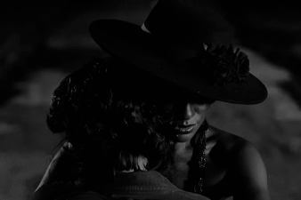
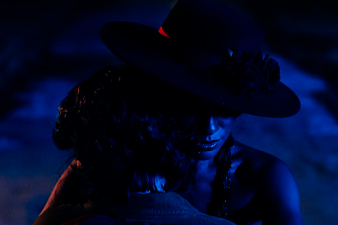
Encruzilhada Pesquisa, concepção visual, desenvolvimento e execução do figurino integral de todos os personagens.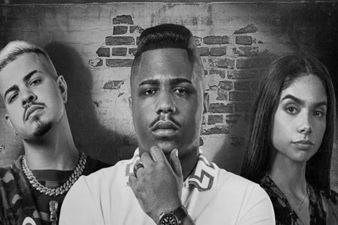
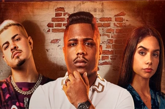
Sintonia (3ª Temporada) Netflix | 3ª Assistente de Figurino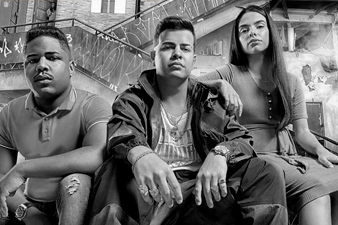
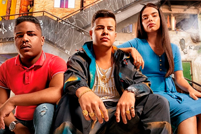
Sintonia (2ª Temporada) Netflix | Estagiária de Figurino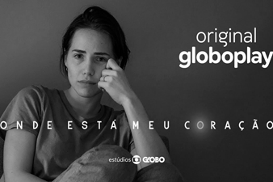
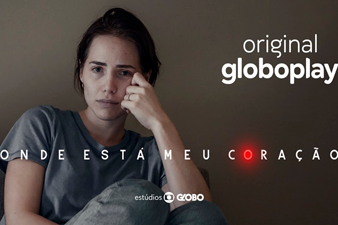
Onde Está Meu Coração Globoplay | Estagiária de Figurino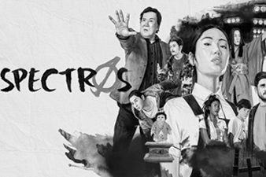
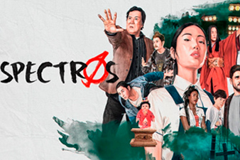
Spectros Netflix | Estagiária de Figurino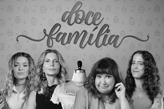
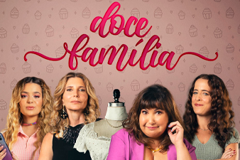
Doce Família 2ª Assistente de Figurino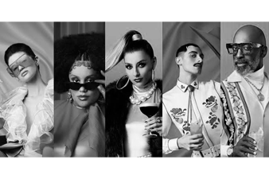
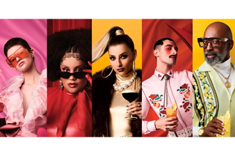
Born to Mix — Absolut Vodka (Campanha Internacional) | 3ª Assistente de Figurino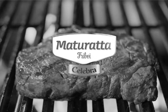
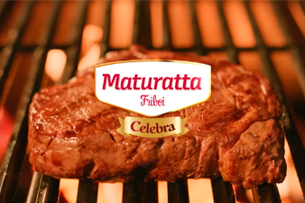
Maturatta — Fim de Ano 2025 1ª Assistente / Coordenadora de Figurino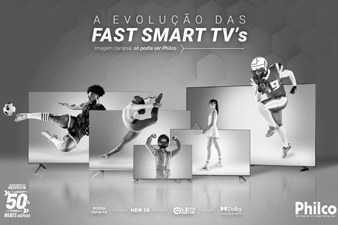
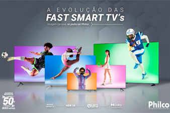
Fast Smart TV Philco 1ª Assistente / Coordenadora de Figurino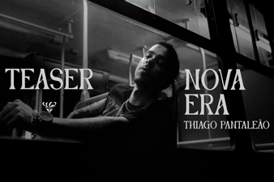
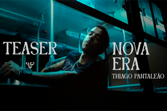
Nova Era — Thiago Pantaleão (8 projetos audiovisuais entre videoclipes e visualizers) | 2ª Assistente de Figurino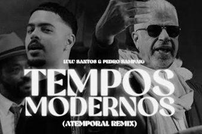
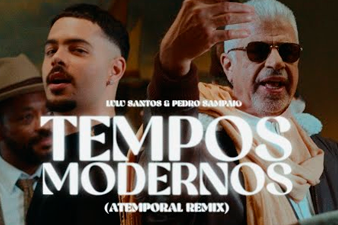
Tempos Modernos — Lulu Santos & Pedro Sampaio 1ª Assistente / Coordenadora de Figurino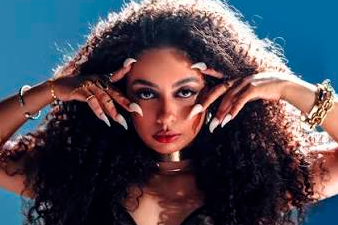
Quero Mais — Gabby Laureano 1ª Assistente / Coordenadora de FigurinoNenhum projeto nesta categoria.
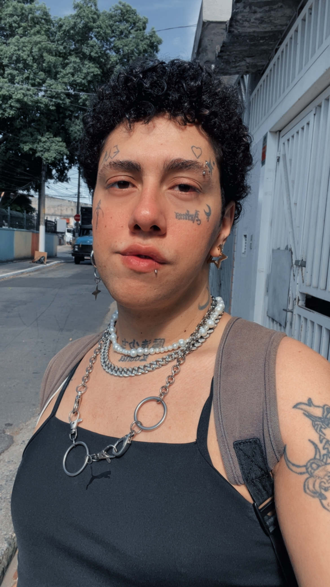
Sobre
Travesti e periférica, trabalho com figurino para audiovisual desde 2022, unindo olhar estético apurado, atenção aos detalhes e conhecimentos adquiridos por meio de vivências e estudos. Atuei como assistente em grandes produções para Globoplay e Netflix, além de filmes, publicidades e videoclipes. Marcas atendidas incluem McDonald's, Philco, Absolut Vodka e Budweiser, e na música, nomes como Lulu Santos, Pedro Sampaio, Thiago Pantaleão, WC no Beat e Gabby Laureano.
Formação Acadêmica
Núcleo de Arte para Cinema e Televisão — Instituto Criar de TV, Cinema e Novas Mídias
Competências Técnicas
- Figurino, Pesquisa de Moda e Tendências
- Criação e Ilustração de Croquis de Personagens
- Pesquisa Histórica, Texturas e Composição visual
- Logística de Produção, Montagem de Camarim e Set
- Desprodução, Catalogação e Inventário
- Coordenação de Equipe de Apoio e Gestão Financeira / Fechamentos